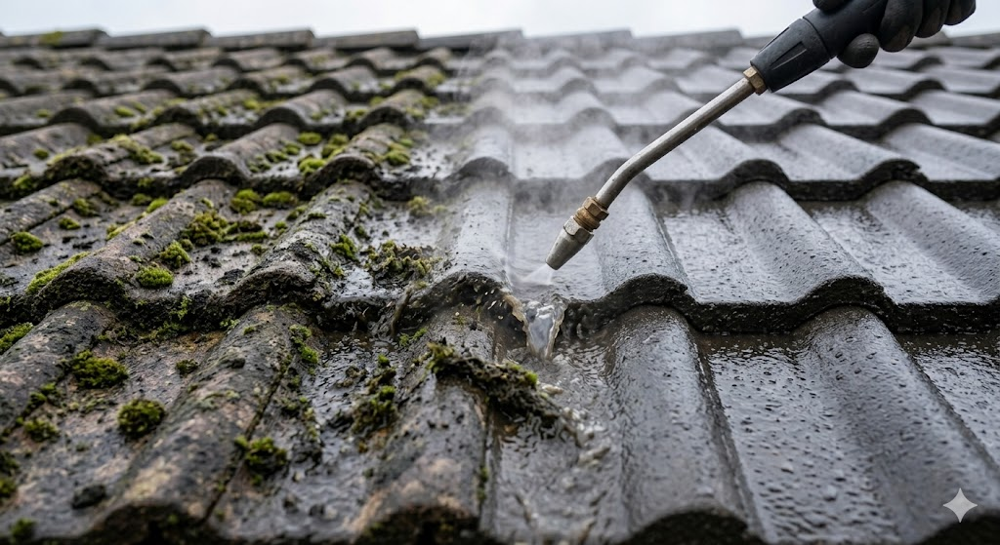

Toitures tuiles, ardoises, fibrociment
Nous traitons toutes les couvertures : tuiles terre cuite, tuiles béton, ardoises naturelles, fibrociment. La vapeur pénètre dans les pores sans fissurer le matériau.
- Décroûtage mousses, lichens, algues
- Sans casse de tuile
- Option hydrofuge longue durée